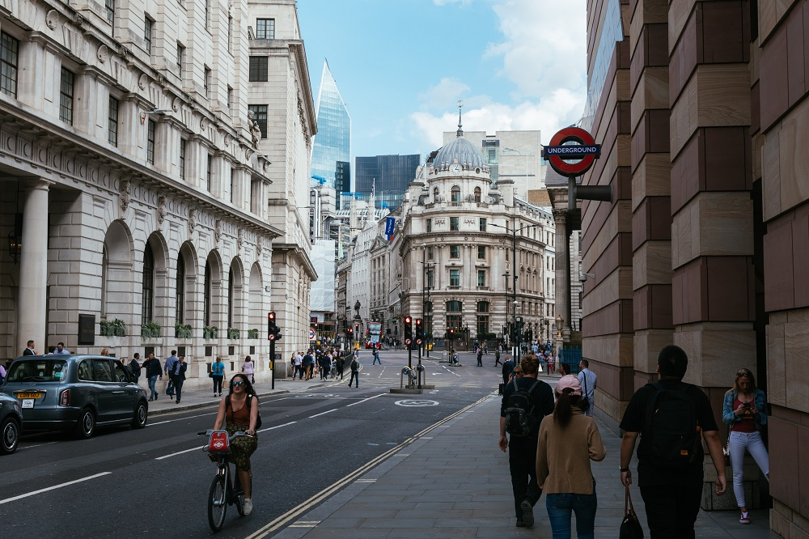
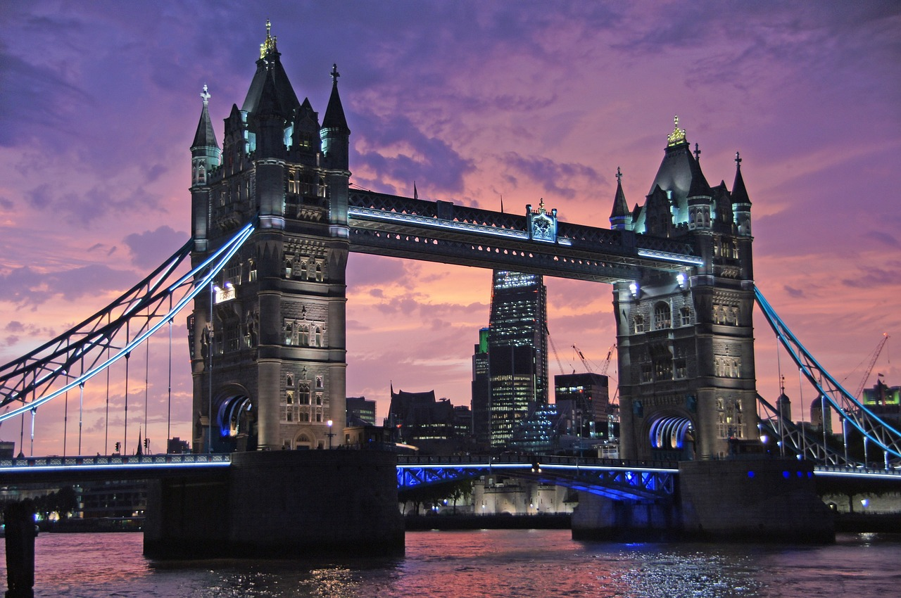

¡Londres es la ciudad infinita! La ciudad más increíblemente irresistible
del mundo te espera siempre con mil y un planes: perder la noción del
tiempo en los museos, Ir de compras por Oxford Street, ver el cambio de la
guardia en Buckingham Palace, subirte a la noria del London Eye, degustar
la mejor street food del mundo en el Borough Market, encontrar tesoros en
cualquier mercadillo dominical… y en otoño, con el espectáculo de la
naturaleza tiñendo de ocre cada esquina de las calles y los los parques
urbanos, ¡Londres es todavía más irresistible! En otoño, la magia y el
misterio arropan a Londres gracias a la celebración de Halloween. No dejes
de visitar lugares como la Torre de Londres, Hampton Court Palace o el
palacio de Kensington, que suelen organizar actividades y eventos
relacionados con la fiesta. O date una vuelta por los cementerios de la
ciudad, que se visten para la ocasión con la celebración del festival
London Month of The Death.

Seguro que sabes que Londres es la ciudad más cosmopolita del mundo. ¡Pásate
por Trafalgar Square el próximo 3 de noviembre y compruébalo por ti mismo
celebrando Diwali! Únete a centenares de miles de personas y celebra el
festival de las luces de hindúes, sijs y jains. Y hasta finales de octubre,
los atardeceres de los Kew Gardens son muy especiales gracias al talento del
famoso escultor Dale Chihuly. 33 de sus famosas obras de arte esculpidas en
vidrio están emplazadas en el parque, y al caer el sol, se iluminan creando
espectaculares juegos de luz mientras suena música en directo y tomas un
prosecco o un helado de cualquiera de los stands.
Londres, la capital del Reino Unido, es una ciudad llena de historia y
cultura que se remonta a miles de años. Su origen se remonta a la época
romana, cuando fue fundada como "Londinium" en el año 43 d.C. por las tropas
del emperador Claudio. A lo largo de los siglos, Londres ha experimentado un
crecimiento y desarrollo significativos, convirtiéndose en una de las
ciudades más influyentes del mundo. Durante la Edad Media, Londres se
convirtió en el centro político y económico de Inglaterra. La Torre de
Londres, una emblemática fortaleza construida en el siglo XI, fue testigo de
varios acontecimientos históricos, incluidas las ejecuciones de figuras
notables como Ana Bolena y Sir Thomas More. La ciudad también fue escenario
de eventos importantes como la Carta Magna, que fue sellada en Runnymede en
1215 pero tuvo un impacto significativo en el desarrollo político de
Inglaterra y más tarde del Reino Unido.